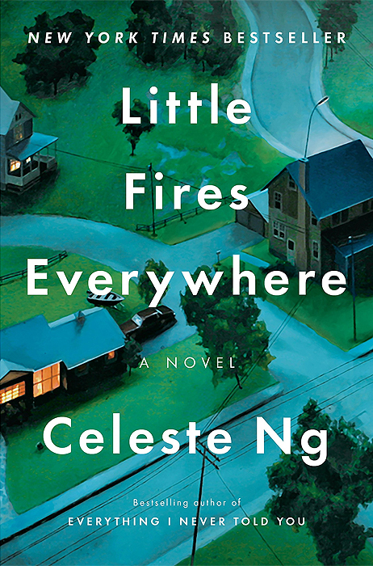

"Little Fires Everywhere"
- Read on 2018-08-28
- Rating: ️️️️️
- Format: 🎧 (11 hours 27 minutes)
With this being a book chosen in a book club I belong to, I chose not to even read a synopsis of this book before starting. It's a fascinating book choice, given who chose the book (Dallimore). Taking place in the late 1990's, this book tells the story of a prominent family in a model neighborhood. An (essentially nomadic) artist and her daughter move into the town... and this is where the story begins, and what it revolves around.
The interactions of the various people and the nuances of the human character which were on display were my favorite elements of the book. I'm not sure if it's supposed to be a commentary on something, or just taken for the story, but I enjoyed it, regardless. How's this for an attempted-spoiler-(and any decent synopsis, for that matter)-review?
- Prior: The Name of the Wind
- Next: Alcatraz Versus the Evil Librarians